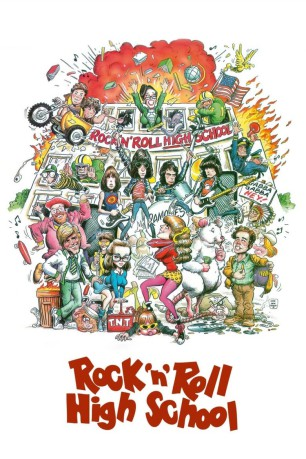

#9669 Rock 'n' Roll High School
 
 IMDB-Wertung: 6.8 / 10
IMDB-Wertung: 6.8 / 10  Tomatometer: 80
Tomatometer: 80  Metascore: 0
Metascore: 0 
Die Vince Lombardi High School ist dem Rock’n’Roll-Virus verfallen – während die Schüler lieber alles andere als den Unterricht im Kopf haben, sind Nerven- zusammenbrüche im Lehrerkollegium an der Tagesordnung. Als jedoch die neue Rektorin Miss Evelyn Togar ihre Stelle antritt, schickt sich die selbsternannte Musikhasserin an, dem unzüchtigen Treiben einen Riegel vorzuschieben. Nur hat sie die Rechnung ohne den Kampfgeist ihrer Schüler gemacht – und dem Erscheinen der Ramones, was in einem finale furiosum, in der Sprengung der Schule endet. “Rock’n’Roll High School” ist ein überdrehter, nihilistischer, rebellischer Filmpogo – einer, der sich vor den Rock’n’Roll- Streifen der frühen 50er-Jahre verbeugt und für sich keine Grenzen gelten lässt.
Jahr: 1979
Dauer: 93 Minuten
FSK: 12
Land: USA Studio: New World PicturesTonspuren:
Untertitel: Deutsch,
Auflösung: 1080p (1920x1080) Größe: 7813 MB
Genre: Musik, Komödie
Regisseur: Allan Arkush, Joe Dante
Drehbuch: Richard Whitley, Russ Dvonch, Joseph McBride, Allan Arkush, Joe Dante
Soundtrack:
Darsteller:
 P.J. Soles als Riff Randell
P.J. Soles als Riff Randell- Vincent Van Patten als Tom Roberts
 Clint Howard als Eaglebauer
Clint Howard als Eaglebauer Dey Young als Kate Rambeau
Dey Young als Kate Rambeau Mary Woronov als Miss Evelyn Togar
Mary Woronov als Miss Evelyn Togar Paul Bartel als Mr. McGree
Paul Bartel als Mr. McGree Dick Miller als Police Chief
Dick Miller als Police Chief- Don Steele als Screamin' Steve Stevens
- Alix Elias als Coach Steroid
 Loren Lester als Fritz Hansel
Loren Lester als Fritz Hansel- Grady Sutton als School Board President
- Chris Somma als Shawn
- Marla Rosenfield als Cheryl
- Joey Ramone als Joey Ramone
- Johnny Ramone als Johnny Ramone
- Dee Dee Ramone als Dee Dee Ramone
- Marky Ramone als Marky Ramone
- Allan Arkush als Ticket Taker in Green Shirt (uncredited)
- Rodney Bingenheimer als Pink Cadillac Driver (uncredited)
- Rob Bottin als Giant White Mouse / Mrs. Mouse (uncredited)
- David Boyle als Student (uncredited)
- Dinah Cancer als Concert Girl with Ear Muffs (uncredited)
- Joe Dante als Riot Cop with sunglasses (uncredited)
- Debbie Evans als Student (uncredited)
- Jack Gill als Student (uncredited)
 Michael Goodwin als Chemistry Teacher (uncredited)
Michael Goodwin als Chemistry Teacher (uncredited)- Kay Kimler als French Teacher (uncredited)
- Joseph McBride als School Board Member (uncredited)
- Ramones als The Ramones (uncredited)
- Jim Rygiel als Guy in Line at Mayan Theater (uncredited)
- Daniel Davies als Fritz Gretel
- Lynn Farrell als Angel Dust
- Herbie Braha als Manager
- Barbara Ann Grimes als Cafeteria Lady
- Terry Soda als Norma
- Joe Van Sickle als Cop
- David N. Barber als Native American Scalper (uncredited)
- Ann Chatterton als Student (uncredited)
- Darby Crash als Audience Member in White Jacket (uncredited)
- Dennis Crosswhite als Student (uncredited)
- Ned Daly als Student (uncredited)
- Sylvia Dante als Nun (uncredited)
- Lorna Doom als Audience Member (uncredited)
- Russ Dvonch als Student Carried by Football Players (uncredited)
- Ben Haller als Roadie with Cocaine (uncredited)
- John Hateley als Student (uncredited)
- Monte Melnick als Road Manager with Mustache (uncredited)
- Linda Ramone als Concert Girl in Hallway (uncredited)
- Teri Schwartz als Nun (uncredited)
- Tammy Trujillo als Girl in Locker Room (uncredited)
Datei: X:\1979\Rock 'n' Roll High School (1979, FSK12, 1920x1080).mkv seit 02.10.2018
Festplatte: HD 1971-1979
 Es gibt insgesamt 29 Filme in der Gruppe '1979'
Es gibt insgesamt 29 Filme in der Gruppe '1979'